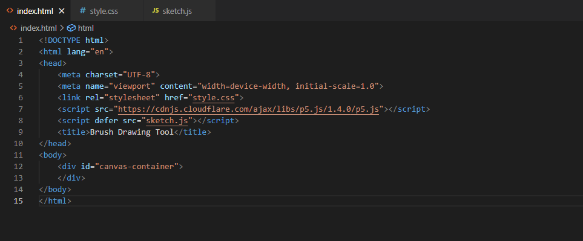
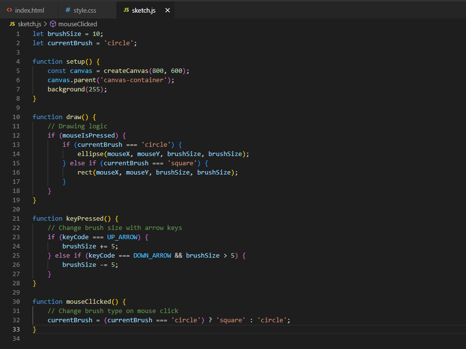
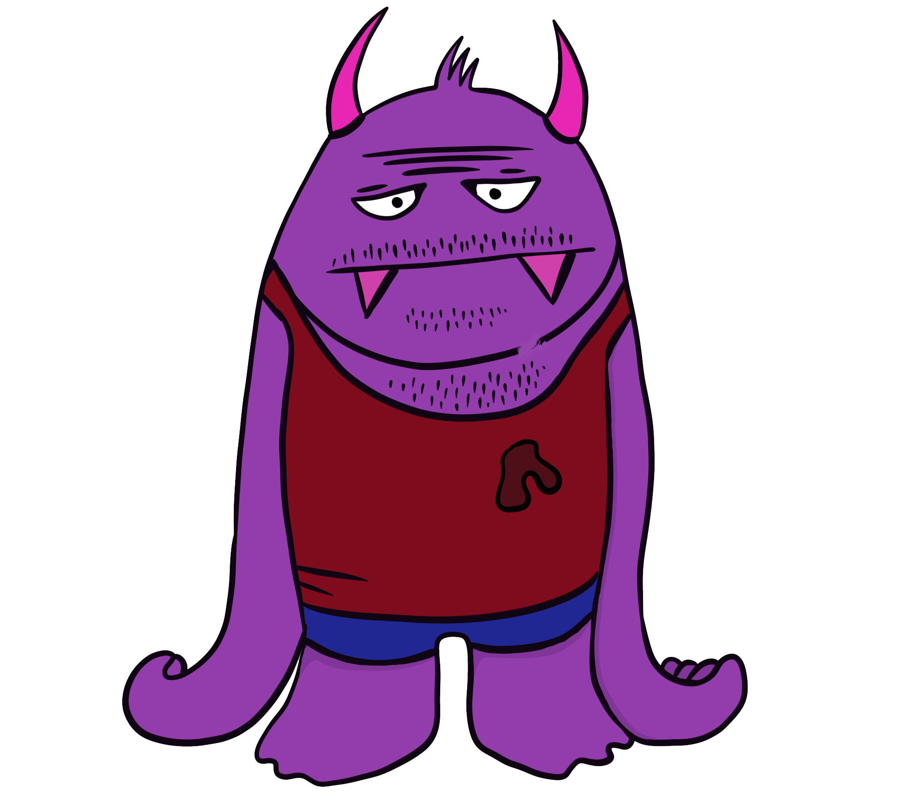

Mit dieser Website will ich meine Arbeiten, die im Laufe des ersten Semesters entstanden sind, präsentieren und erklären wie sie funktionieren.
Projekt 1
Brush Drawing Tool (little tools)
Der gegebene HTML-Code erstellt eine einfache Webseite für ein Zeichenwerkzeug mit einer Canvas-Anzeige. Hier ist der dazugehörige code:
Zusammenfassend wird hier eine einfache HTML-Datei erstellt, die eine Canvas-Anzeige für ein Zeichenwerkzeug bereitstellt. Die tatsächliche Interaktivität und das Zeichenwerkzeug werden in der JavaScript-Datei "sketch.js" implementiert, während das Erscheinungsbild der Seite in der CSS-Datei "style.css" gesteuert wird.
Dieser Code implementiert ein einfaches Zeichenwerkzeug in JavaScript mithilfe der p5.js-Bibliothek.
Zusammenfassend ermöglicht dieser Code das Zeichnen von Kreisen und Quadraten auf einer Canvas-Anzeige mit der Maus. Die Pinselgröße kann mit den Pfeiltasten angepasst werden, und die Pinselart kann durch einen Mausklick gewechselt werden.
Dieser CSS-Code definiert das Aussehen und Layout der HTML-Elemente auf einer Webseite.

Zusammenfassend wird der gesamte Inhalt der Webseite zentriert auf der Seite dargestellt, und ein Container mit einer schwarzen Umrandung dient wahrscheinlich dazu, den Zeichenbereich (Canvas) auf der Seite visuell zu markieren.


Projekt 2
Pain Mat(t)e
Hier kannst du deine Dokumentation für Abschnitt 2 einfügen.
Projekt 3
"My sleeping uncle"
Hier kannst du deine Dokumentation für Abschnitt 3 einfügen.
